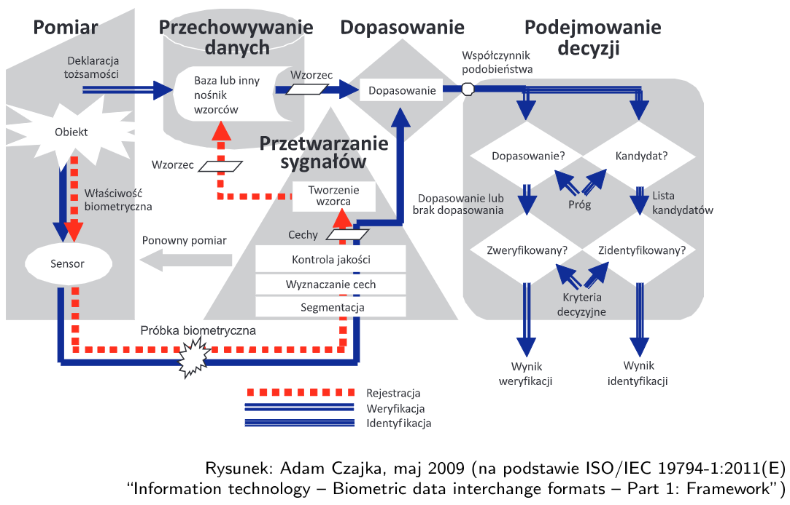

Biometryczna identyfikacja tożsamości
Bezpieczeństwo systemu
biometrycznego
Budowa systemu
biometrycznego
- Podsystem pomiarowy
- sensor
- sensor mierzy obiekt
- Podsystem przetwarzania sygnałów
- sfera algorytmiczna
- segmentacja
- wyznaczanie cech
- kontrola autentyczności
- Podsystem przechowywania danych
- Podsystem dopasowania danych
- Podejmowanie decyzji
- Podsystem administracyjny
- ustalanie progów akceptacji próbek i kryteriów
- inne rzeczy wynikające z tego że to system informatyczny,
niekoniecznie związane z biometrią
- kontrolowanie środowiska
- logowanie, monitorowanie
- zapewnienie prywatności
- Interfejs
- programistyczny i sprzętowy
- umożliwia komunikację między systemami
- Każdy komponent jest punktem wrażliwym
- w każdym mogą wystąpić podatności
Przepływ danych

Przeplyw danych w systemie
biometrycznym
- Rejestracja
- pomiar obiektu sensorem
- przetworzenie próbki biometrycznej - utworzenie wzorca
- zapis wzorca na nośniku lub w bazie danych
- Weryfikacja
- deklaracja tożsamości
- wyszukanie wzorca w bazie
- pomiar i wyznaczenie wzorca
- dopasowanie utworzonego wzorca ze wzorcem z bazy
- wyznaczenie współczynnika podobieństwa
- podejmowanie decyzji
- Identyfikacja
- pomiar i wyznaczenie wzorca
- porównanie z każdym wzorcem z bazy
- znalezienie najbliższego dopasowania
- podjęcie decyzji
Bezpieczeństwo sensora
Testowanie żywotności
- Przetwarzane dane muszą być wynikiem pomiaru cech żywej osoby
- Muszą być dostarczane właściwe próbki biometryczne
- Badanie żywotności jest niezbędne aby system można było nazwać
biometrycznym
Ochrona urządzeń i danych
- Obudowy odporne na ingerencję
- nie da się otworzyć śrubokrętem
- Kasowanie i zamazywanie pamięci w przypadku ingerencji
- Uwierzytelnienie i certyfikacja urządzeń
- nawzajem przez komunikujące się urządzenia
- poddanie testom przez akredytowaną instytucję
- Szyfrowanie i podpisywanie danych do dalszych komponentów
systemu
Bezpieczeństwo transferu
danych
- Podsłuchiwanie transmisji
- dane biometryczne - próbki, dane wstępnie przetworzone, wzorce
- parametry kodowania
- wyniki testów żywotności
- parametry jakościowe
- wyniki dopasowania
- decyzje
- Ingerencja w transmisję
- modyfikacja danych
- wstrzykiwanie danych
Przykład ataku - hill
climbing
- Atakujący zyskuje dostęp do kanału transmisji, może wstrzykiwać
syntetyczne dane biometryczne
- Próbuje dopasować sztuczny zbiór minucji do wzorca
- Atakujący generuje losowy zbiór minucji
- porównuje ze wzorcem
- generuje kolejny, zmieniony zbiór minucji
- optymalizacja współczynnika dopasowania
- Wiele iteracji
- Obrona przed atakiem
- spowolnienie, ograniczenie liczby zapytań do systemu
- nie udostępniać współczynnika dopasowania, tylko decyzję
- załatać dziurę, która umożliwiła dostęp do kanału komunikacji
Syntetyczne dane
biometryczne
- Generowanie danych na podstawie których można uzyskać wymagane
podobieństwo wzorca biometrycznego wyznaczonego dla tych danych z
wzorcem referencyjnym
- Biometria odwrotna
- odtworzenie surowych danych na podstawie wzorców
- zabezpieczenie - stosowanie operacji jednokierunkowych przy
wyznaczaniu wzorców
- Przykład tęczówki
- jednoznaczne przekształcenie z przestrzeni zdjęć tęczówki do
przestrzeni kodów
- niemożliwość jednoznacznego odwzorowania w drugą stronę
Możliwości zabezpieczeń
- Kryptografia
- Steganografia
- osadzanie tajnej informacji niezaburzającej informacji
biometrycznej
- stosowana do uwierzytelniania urządzeń i wzorców
- np. odłożenie tajnego klucza na najmniej znaczących bitach
- np. w celu uwierzytelnienia urządzeń
- Bio-kryptografia
- tworzenie klucza kryptograficznego na podstawie danych
biometrycznych
- klucz potem używany np. do kontroli dostępu
- Wykorzystanie właściwości biometrii
- naturalna zmienność wzorców biometrycznych - realistycznie nie
będzie dwóch identycznych pomiarów
- można wprowadzić górny próg podobieństwa
- parametryzacja i interaktywność metod porównywania - biometria
wielokrotna
- zaszumienie / kwantyzacja wyników porównań - przeciwdziałanie atakom
hill climbing, brute force
- jednokierunkowość przekształceń
Bezpieczeństwo
nośników i przechowywania danych
Karta mikroprocesorowa
- Np. dowód osobisty
- Urządzenie wyposażone w procesor, pamięć, często koprocesor
kryptograficzny
- Zasilanie indukcyjne
- przytknięcie do sensora z pętlą indukcyjną
- Wysokie bezpieczeństwo, ograniczone zasoby
Technologia match-off-card
- Wzorzec jest przechowywany na karcie mikroprocesorowej
- Nie ma centralnej bazy
- Np. kontrola paszportu
- Nie można wykraść danych z centralnej bazy bo nie istnieje centralna
baza
- Trzymanie danych po stronie użytkownika wymusza interoperacyjność
- wzorce ustandaryzowane przez ISO
Technologia match-on-card
- Podejmowanie decyzji wykonywane po stronie karty inteligentnej
- Przetwarzanie sygnałów nie może być robione na karcie, bo to za dużo
obliczeń dla tak małych zasobów
- Rzadki schemat
Technologia
measure-and-match-on-token
- W jednym urządzeniu wszystkie elementy przetwarzania
- Np. biometria w telefonie
- Tokeny biometryczne